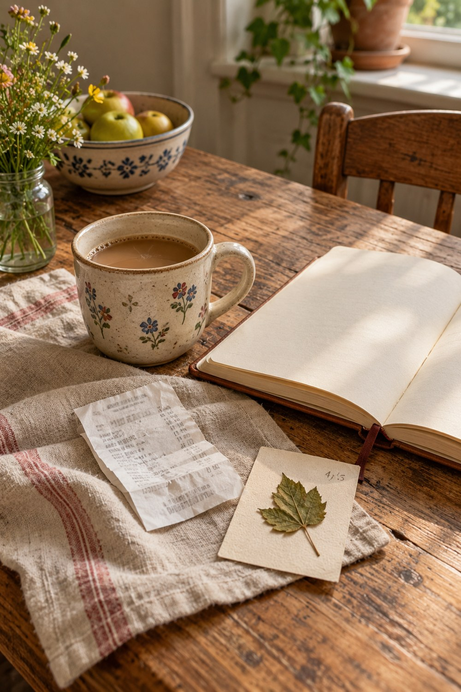

You do not need a complete record to keep an ordinary weekday. A useful page can begin with one physical trace, one sentence, and a little room around both. The small format protects the memory from becoming another project you have to finish perfectly.

Choose the part that still has texture
Before reaching for decoration, ask what you can still sense. Notice the light, temperature, background sound, or object your attention keeps returning to. Write those details as plain notes. They are often more truthful than a polished summary, and they give the page a place to stand.
Choose a grocery receipt, tea label, bus ticket, or the corner of a paper bag. If the original is private, fragile, or too bulky, copy its shape or color instead. The goal is not to archive everything. It is to give the memory one piece of evidence that feels connected to real life.
Write one sentence with a clear edge
Use a sentence that begins with “I noticed,” “I kept thinking about,” or “The part I want to remember is.” Stop when the sentence has named one thing. You can add more later, but a contained first line prevents the page from demanding an explanation of the entire day.
Place the sentence on a separate scrap rather than writing across the whole background. A small writing area makes the words feel intentional and leaves you free to move them while the composition settles.
Build the page in three quiet layers
Start with a plain or softly patterned foundation in oatmeal, moss, and warm brown. Add the physical trace next, then place the sentence where it can be read without lifting another element. Repeat one color once on the opposite side of the page. That small echo is usually enough to make the arrangement feel complete.
Resist filling every gap. Empty paper is useful: it separates the memory from the decoration and gives the eye somewhere to rest. If the page feels unfinished, add a date, place, or tiny weather mark before adding another image.
Make the page easy to revisit
Leave one small flap, pocket, or blank line for something you may remember later. This is not an invitation to postpone finishing; it is a gentle acknowledgement that memory arrives in pieces. Write the date on the back of the movable piece so it cannot become an anonymous scrap.
When you return, add only information that sharpens the original moment. A forgotten name, exact color, or small correction belongs. A long explanation added from obligation usually does not. The page can remain modest and still be complete.
Finish with a detail only you would know
Add one fact that could not come from a generic prompt: the cup you used, the wrong turn, the sentence someone always says, or the sound of a particular door. Specificity is what turns pretty paper into memory keeping. It does not need to be dramatic to be worth preserving.
Close the journal and return tomorrow. If the page still reads clearly from a small distance, leave it alone. A restrained page can hold a large feeling without explaining it away.
Find more gentle ways to keep ordinary life in the Sentimentalica journal archive.